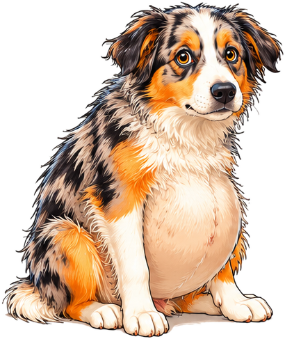
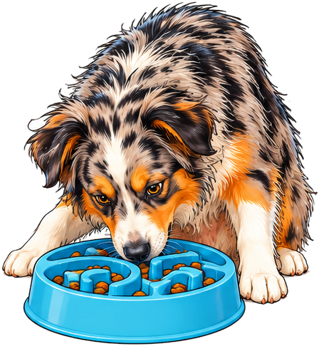

Ist dein Hund ein Schnellfresser?

Er schluckt dabei viel Luft.

Die Folge: Bauchweh.

Im schlimmsten Fall: Magendrehung.


Das ist ein Notfall!
🎈 Dicker Bauch
🤢 Würgen ohne Erbrechen
😰 Unruhe
Die Lösung: langsamer fressen.

ist sein napf in sekunden leer?
dann frisst er zu schnell
beim schlingen schluckt er viel luft
der bauch bläht sich auf
das kann bauchweh machen
oder er würgt alles wieder hoch
im schlimmsten fall dreht sich der magen
vor allem bei großen hunden
bei diesen zeichen sofort
zum tierarzt – jede minute zählt
ein anti-schling-napf hilft
so frisst er ganz entspannt

HundeWissenTv
HundeWissenTv
+ Folgen